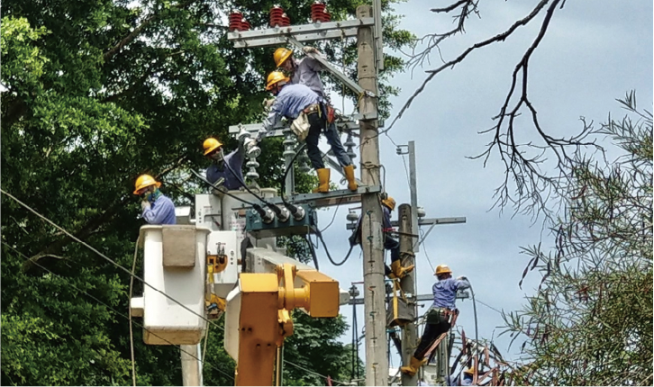

一則關於松鼠引起跳電的故事
『近幾年報導常常出現有關「松鼠造成跳電事件」、「台灣一年跳電有1/5是松鼠造成的」的聳動標題。
似乎小小的一隻松鼠可以造成嚴重的民生威脅，
然而，這究竟是台電的防患不然？還是純粹的網絡輿論？抑或是野生動物真的已經過度氾濫了？』
似乎小小的一隻松鼠可以造成嚴重的民生威脅，
然而，這究竟是台電的防患不然？還是純粹的網絡輿論？抑或是野生動物真的已經過度氾濫了？』
台電受訪狀況與跳電狀況
關於小型走獸造成的跳電到底是怎麼形成的，小型走獸所造成的跳電
實際上有許多種，飛禽站上電線桿上導電的部位、松鼠或蛇造成電線
的短路等等。但這真的有想像中的嚴重嗎？針對小型走獸所造成的跳
電，台電的回饋是「頂多就造成
15 秒的停電而已」， 15 秒就重新
恢復供電，代表一般人可能根本感覺不會受到太多衝擊。
而台電究竟針對此面向做出什麼樣回應與防患呢？根據公開的對外新
聞稿，台電說明，民眾通報及媒體關注之零星區域停電事故，多屬配
電系統停電。統計每年 1 至 9 月期間， 106 年至
111
年約有五成事故
屬於鳥獸、樹木碰觸或雷害等外力影響。針對外力造成的事故停電，
台電以加裝驅鳥器、防鼠網、樹木修剪及孔洞封填等措施，盡力降低
配電設備受外物影響的風險。依據台電數據，年度事故停電次數從
2012 年 2.1 萬次，逐年減少至去 (2021) 年約 9000 次，而每戶停電
時間(分/戶-年)亦從 2012 年的 19.05 分鐘降低 16 % 至 2020
年平均
每年每戶停電 15.93 分鐘，也就是說，其實台電已經花費許多的物力
與人力進行設備更新，不論是停電時間還是停電次數，都是逐年下降
並且有效控制的狀態的。
以今年八月鬧得沸沸揚揚的鼓山跳電事件為例，自 107 年起至今，針
對高雄地區配電系統改善投資金額達新台幣 65 億元，並已汰換 19,015
具變壓器、 322
公里的架空被覆線及
101
公里的高壓電纜，有效降低
老舊設備導致事故停電的風險。因此，我們需要關心的是台電花費的
巨額成本究竟是否能逐年降低，還是會隨著野生動物的氾濫更加劇成
為全民買單的重大成本？
松鼠穿梭在電線桿上常誤觸開關，造成配電系統短路而造成停電。

台電自2018年啟動配電系統強韌計畫，推動線路設備更新汰換，並引入變壓器負載監測與故障顯示器等新科技設備。

為了供應全台民眾24小時不間斷的供電需求，台電耗費巨量金錢與人力進行配電系統的維護與更新。
全台小型走獸的氾濫
回到台灣的環境問題，除了松鼠外，獼猴也造成大量的衝突與問題。
全台的獼猴總數大約為 20 萬至 30
萬隻，依據環境資訊中心的數據
顯示，台灣獼猴的數量目前沒有超過環境負載量，然而近年來獼猴主
要造成兩大問題——「農業損害」與「人猴衝突」。
首先，近年來越來越頻繁的「人猴衝突」讓許多民眾怨聲連連，經常
聽聞野生獼猴搶奪人類食物與物品、攻擊人類的新聞，因此大家對獼
猴的觀感也從愛護轉為憎惡，有些人甚至會在與獼猴衝突時拿出彈弓
、木棒、
BB 槍等器具主動攻擊獼猴。另外，近年來新聞頻傳獼猴破
壞果園、入侵田地、啃咬作物等等的消息，甚至有枇杷產銷班農民指
出，每年獼猴入侵果園約將損害 40%
左右的果物，農民們皆不堪其
擾，更造成獼猴的惡名昭彰。
但事出必有因，這些問題真的都是獼猴的錯嗎？回頭細究「人猴衝突
」的根源，真正野生的獼猴看到人類接近其實是會害怕、躲避的，但
在觀光區域自從人類開始了餵食行為後，獼猴累積了一些在人類身上
取食的經驗，食髓知味後獼猴漸漸改變了行為模式，演變出了搶食、
掠奪的攻擊性行為，才造成了現今大家口中的「人猴衝突」。根據環
境資訊中心，在沒有人類餵食的區域，獼猴對於人類的食物根本不感
興趣，完全不會發生搶食行為。
接著將眼光放至獼猴造成的「農業損害」，根據關懷生命協會，台灣
的農業用地有一半原先是獼猴的家園，從前在原始森林中獼猴進食種
類多樣，牠們會吃果實、葉片、嫩枝芽、嫩莖髓，也會捕食昆蟲、蝸
牛、鳥蛋等動物，然而在人類將原始林開墾為果園後，他們的棲息地
忽然出現了許多鮮甜美味的果實，獼猴們也理所當然地會被吸引，而
搶食農民辛苦中出的農作物。
共榮共存的方法。

大安森林公園的受訪狀況
為何台灣的小型走獸會這麼猖狂呢？以台北市的核心綠地為例，大安
森林公園之友基金會表示，在面積 26 公頃的公園裡就有 600
隻左右
的赤腹松鼠，且和其他地區相比，大安森林公園的松鼠因不斷有人類
餵食，體型更為肥胖壯碩。
當工作人員在修剪樹木時，會發現樹皮有被啃咬的痕跡，大安森林公
園之友基金會提到：「因為松鼠吃了不好啃咬的食物都會需要磨牙，
在沒有適當食物時就會去咬樹皮，造成樹木撕裂傷，如果來不及癒合
細菌侵入就會導致樹木腐朽或是環狀剝皮......」，雖然工作人員會截
斷已經腐朽的枝條，但松鼠造成的危害也導致樹木生長情況不佳，腐
朽枝條支撐力不佳更有可能砸傷行人。
松鼠之所以會大量繁衍造成環境危害，主因是人類的過度餵食，民眾
在公園中的餵食速度很快，不容易被察覺到正在餵食松鼠，大安森林
公園之友基金會表示：「我們觀察到松鼠會主動向人索討食物，松鼠
站起來的時候民眾會覺得好可愛喔，因為牠會去拉你的塑膠袋或是看
著你吃東西，一邊動動身體，人們基於同情就會開始餵食。」而有受
過環境推廣教育的民眾會知道不能隨意餵食，當人們不主動餵食松鼠
後，牠就會自己去覓食，回歸到最正常的自然狀態。
「看到有人餵食我們會去勸導他，但他們會有情緒反彈，而且我們跟
他們一樣是民眾，無法直接罰款，法規通過後，我們現在就可以去通
知駐警隊到現場請他不可以這麼做、甚至開罰單。」由於過去民眾餵
食情況造成生態失衡，因此
2021 年台北市政府公告， 6 月 1 日起禁
止餵食野生動物，若勸導第二次不聽者將處 1200 至 6000 元罰鍰，
會工作人員也表示有了公權力的介入，更可以即時阻止民眾餵食。
除了法規新增的限制，在教育推廣上大安森林公園之友基金會也不遺
餘力，「現在主要是以教育推廣，和民眾說餵食其實會造成動物的傷
害，因為松鼠營養太好的話牙齒會一直長，一方面如果牙齒長太長會
刺到嘴巴，造成松鼠口腔流血；另一方面，松鼠每個月生寶寶大量繁
殖，就可以看到他們營養太好對健康會產生影響。」當民眾了解自己
的行為對松鼠造成的傷害後，更能從根本上停止餵食，達成更好的效
果。
最後，大安森林公園之友基金會想對民眾呼籲：「公園是大家可以放
鬆享受自然的地方，也是很多生物存在的地方，所以走進來時要用更
包容、尊重的態度面對動物的生命。」